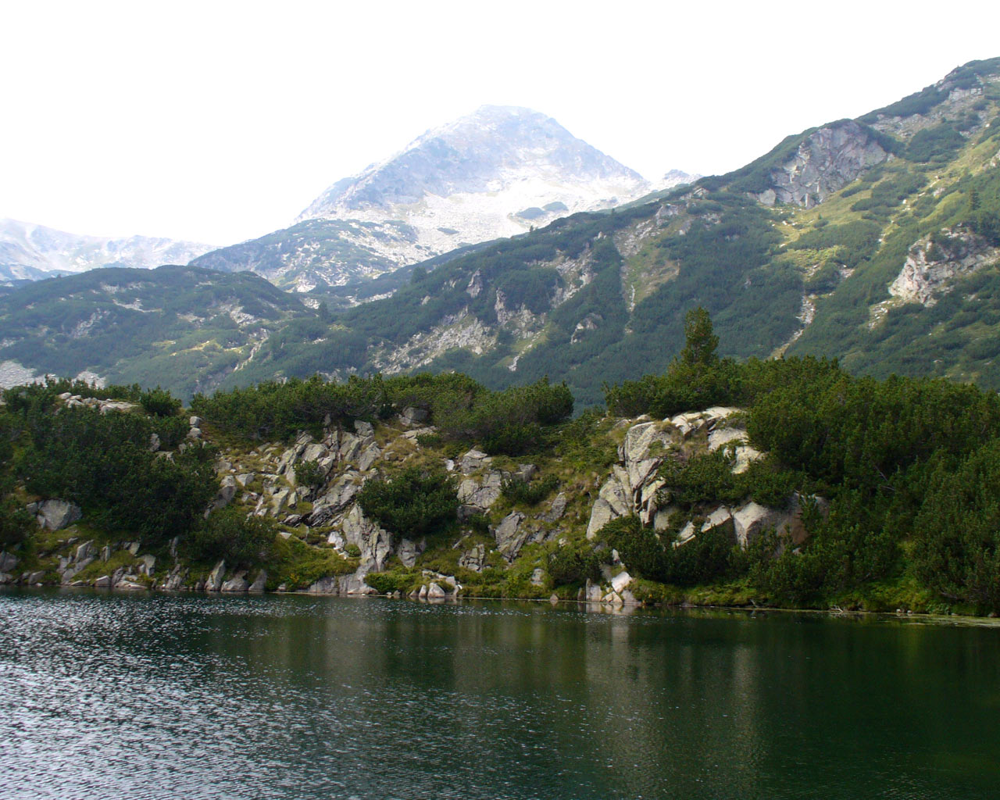

Национален парк - Пирин
 „Пирин“ обхваща по-голямата част от планината Пирин, разположена в Югозападна България. Национален парк „Пирин“ е един от трите национални парка в Република България. Другите два са Рила и Централен Балкан. Паркът заема значителна част от планината Пирин. В исторически план границите и размерът на националния парк са претърпели много промени.
Народен парк Вихрен е създаден на 8 ноември 1962 г. с цел опазване на горските масиви, разположени в най-високите части на планината. Паркът имал площ от около 6200 хектара, което е малка част от днешната му територия. През 1974 г. с указ на министерството на горите той е преименуван на Народен парк Пирин, а територията му значително е увеличена.
Отделна дирекция, която отговаря за опазването и развитието на парка, е създадена през 1979 г. Седалището на тази дирекция е в град Банско. За Национален парк е обявен през 1998 г. след създаването на Закона за защитените територии в Република България. Територията на националния парк е 40 332,4 хектара. Управлението на парка, след като той приема статута на Национален парк, е задача на Министерството на околната среда и водите.
Националният парк граничи с общините Гоце Делчев, Банско, Разлог, Симитли, Кресна, Струмяни и Сандански. В рамките на националния парк се намират два природни резервата – Баюви дупки - Джинджирица, който е един от най-старите резервати в България, и резерват Юлен. Резерват Баюви дупки – Джинджирица е част от мрежата на биосферните резервати по програмата „Човек и биосфера“ на ЮНЕСКО. През 1983 година паркът е обявен за една от териториите от световно значение, които се намират в Европа.
Предложения за хотели в Пирин планина.